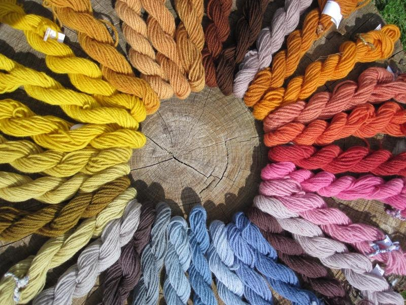
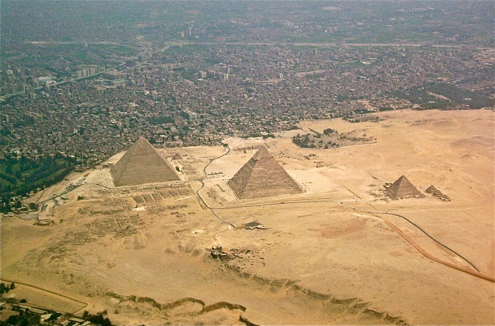
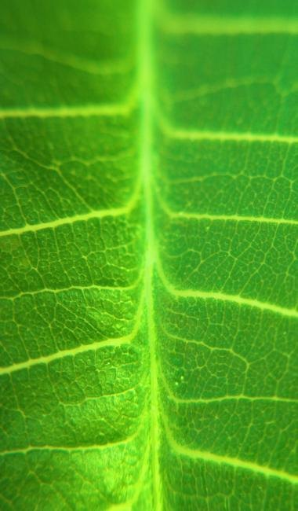
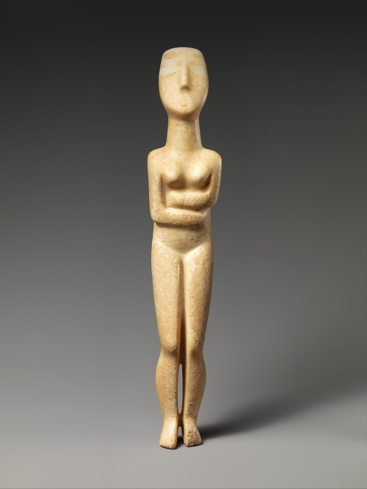
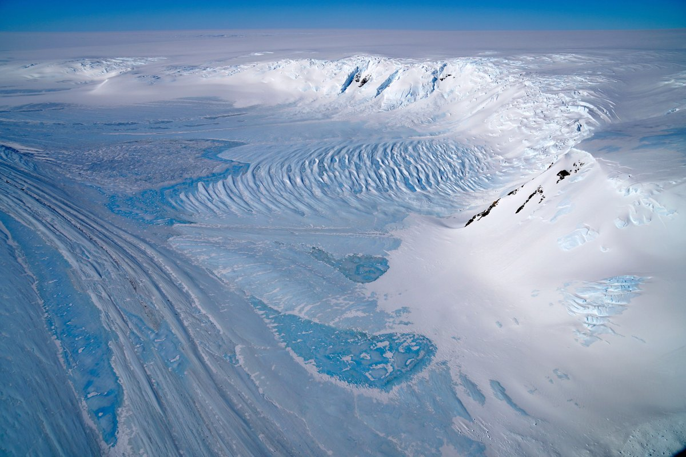

The color wheel organizes every visible hue by how colors relate to one another: primary, secondary, and tertiary. Study the wheel below before you read further.


A real color wheel, arranged the same way an artist's color wheel is: red, yellow, and blue (primary) spaced evenly around the circle, with orange, green, and violet (secondary) and tertiary mixes filling the hues between them.
Shape is one of the most important Elements of Art. Because shapes are two-dimensional, they are central to digital design, photography, and illustration. In Pixlr E, you combine and layer shapes to build characters, scenes, and abstract compositions. Every digital artwork begins with shape, whether the finished piece looks simple or complex.



Images: Wikimedia Commons (CC0 / CC BY-SA) and Metropolitan Museum of Art Open Access (public domain).
In traditional painting, color is created through a subtractive process: mixing pigments, where adding more color makes the mixture darker. Digital screens work the opposite way. A screen creates color through an additive process, projecting light directly to your eyes. Digital tools mix the additive primary colors, red, green, and blue, known as RGB. The more light you add, the brighter the result, and all three colors at full strength make white light.
Subtractive (pigment/paint)
Mixing paint or ink. Adding more color makes the mixture darker. Mixing all colors moves toward black or muddy brown. This is how traditional painting works.
Additive (light/RGB)
Mixing light on a screen. Adding more color makes the result brighter. Red, green, and blue light at full strength combine to make white. This is how every digital screen works.
A screen is not the only place your art might end up. Everything above describes how a screen builds color: light, mixed additively, in RGB. Professional printing uses a different, subtractive system called CMYK: cyan, magenta, yellow, and key (black) ink layered on paper. Week 1's quiz asked which format was the strongest choice for a logo that must print sharp on both a card and a billboard, and the answer was vector, because a vector file scales to any size without losing quality. CMYK versus RGB is a separate, additional decision from vector versus raster for that same logo: vector versus raster decides whether the artwork stays sharp at any size, while CMYK versus RGB decides whether the colors on your screen will match the colors once the file reaches a printer.
When the additive primaries mix, they form the additive secondary colors: yellow, magenta, and cyan. Just like the traditional color wheel, complementary colors sit across from each other: red and cyan are complementary, as are green and magenta. Most digital art programs let you dial red, green, and blue light from 0 to 255 each.
Digital color also has three adjustable properties, known as HSL:
- Hue: the name of the color itself (red, blue, yellow).
- Saturation: the intensity or purity of a color. Highly saturated looks bold and vivid; desaturated looks muted or grayish.
- Lightness: how light or dark a color appears, based on the amount of light in it.
Artists and photographers choose color schemes deliberately to create mood and meaning. Here are six ways to build a palette.
Warm colors, like red, orange, and yellow, remind us of sunlight, heat, and energy. Photographers and digital artists often use warm tones to express happiness, excitement, or warmth.
Cool colors, like blue, green, and violet, suggest calmness, distance, or even sadness. A cool palette can make a scene feel calm or emotionally distant.

Neutral colors, white, gray, black, and brown, are not on the color wheel. In digital art and photography, neutrals highlight the main subject rather than the color itself.
Monochromatic palettes use different tints, tones, and shades of a single color, for example variations of yellow ranging from pale cream to deep gold. This creates harmony and unity while still showing depth and contrast.
Polychromatic schemes include many different hues. Using a variety of colors can make an image feel vibrant and lively; a polychromatic palette might combine primary, secondary, and neutral colors for visual excitement.
Grayscale moves from white to gray to black. It is common in black-and-white photography and digital editing to highlight light, shadow, and form. Without color to distract, viewers focus more on texture, lighting, and composition.
Shape gives your composition its structure. Color gives it its mood. On a screen, color is built from light, not pigment, which changes how you mix and adjust it. Once you can name a color scheme and explain why you chose it, you are making a deliberate artistic decision, not just picking a color you like.